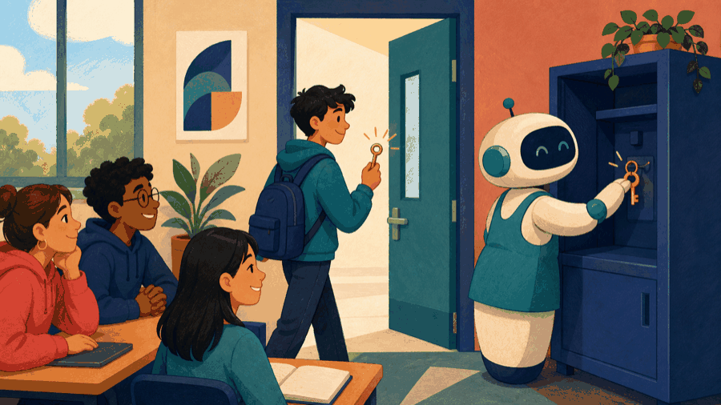

# Lecture 14: Make dynamic ownership explicit ## Make ownership and lifetime explicit **Instructor:** [Dr. Debasish Pattanayak](https://drdebmath.github.io)
## Ownership determines who releases memory. · Ownership-safe linked sample log Each node exclusively owns the next node, so the complete chain is released automatically. ~~~cpp #include <iostream> #include <memory> struct Node { int sample; std::unique_ptr<Node> next; }; int main() { auto head = std::make_unique<Node>(); head->sample = 42; head->next = std::make_unique<Node>(); head->next->sample = 57; for (Node* p = head.get(); p; p = p->next.get()) std::cout << p->sample << " "; } ~~~ **Takeaways** - Ownership determines who releases memory. - Links turn separate allocations into a structure. - Leaving scope releases the complete owned chain automatically.
## The general form of dynamic allocation, ownership, and a node ~~~cpp <T>* <p> = new <T>(<arguments>); delete <p>; <T>* <a> = new <T>[<count>]; delete[] <a>; // the [] must match std::unique_ptr<T> <p> = std::make_unique<T>(<arguments>); // no delete: <p> releases the object when it goes out of scope struct <Node> { <T> <value>; <Node>* <next>; // nullptr marks the end of the chain }; ~~~ | Part | Meaning | | --- | --- | | <code>new</code> / <code>delete</code> | Must pair exactly once. Zero deletes leaks; two deletes is undefined behavior. | | <code>new[]</code> / <code>delete[]</code> | A separate pair. Mixing the two forms is undefined even when it appears to work. | | dangling pointer | A pointer that outlives what it pointed at. Deleting does not change the pointer's value. | | <code>unique_ptr</code> | Exclusive ownership tied to scope, so the release cannot be forgotten or repeated. | | <code><Node>* <next></code> | Each node stores where the next one lives, so the sequence needs no contiguous block. | Ownership is the question to answer first: decide who releases the object, and the matching <code>delete</code> follows from that.
## Automatic storage follows scope; dynamic storage follows ownership Automatic local objects are destroyed when their scope ends. Dynamic storage can outlive the creating scope, so ownership must state who releases it.
## new and delete must match the allocated type and ownership ~~~cpp int* value = new int{42}; std::cout << *value << '\n'; delete value; value = nullptr; ~~~ Use <code>delete[]</code> only for storage obtained with <code>new[]</code>.
## The room closes while the object is still alive <figure class="course-meme-figure"> <figcaption> <p class="course-meme-setup"><strong>Setup</strong> The local scope closes while the dynamic object is still alive.</p> <p class="course-meme-punchline"><strong>Punchline</strong> Someone has to carry the key if the object can outlive the room.</p> </figcaption> </figure>
## unique_ptr makes exclusive ownership and release explicit ~~~cpp auto value = std::make_unique<int>(42); std::cout << *value << '\n'; ~~~ A smart pointer releases its owned resource automatically. It prevents ownership leaks, but unrelated non-owning pointers can still dangle.
## Leaks, dangling pointers, double deletion, and bad allocation are different defects - Memory leak: owned storage becomes unreachable without release. - Dangling pointer: an address remains after the object has died. - Double deletion: the same allocation is released twice. - Allocation failure: <code>new</code> normally throws <code>std::bad_alloc</code>.
## A linked list represents a sequence through separately stored nodes ~~~cpp #include <memory> struct Node { int value; std::unique_ptr<Node> next; }; auto head = std::make_unique<Node>(); head->value = 42; head->next = std::make_unique<Node>(); head->next->value = 57; ~~~
## The release tool claims it works for everything <figure class="course-meme-figure"> <figcaption> <p class="course-meme-setup"><strong>Setup</strong> The release tool claims it works for everything.</p> <p class="course-meme-punchline"><strong>Punchline</strong> Allocation and release are a matched pair, not a guessing game.</p> </figcaption> </figure>
## Game evolution: Linked ownership lets Snake grow safely | Today's concept | Exact game part enabled | |---|---| | dynamic storage and exclusive ownership | let the body grow as a chain of owned segments | ~~~cpp #include <memory> struct Segment { int cell=0; std::unique_ptr<Segment> next; }; int main() { auto head=std::make_unique<Segment>(); head->cell=12; head->next=std::make_unique<Segment>(); head->next->cell=11; } ~~~ **Ownership invariant:** the head exclusively owns the chain; automatic destruction follows every <code>next</code> link. **Next unlock · L15:** maintain pending dirt as a queue and search stored cells.
## Traversal stops at nullptr after visiting each reachable node ~~~cpp for (Node* current = head.get(); current != nullptr; current = current->next.get()) { std::cout << current->value << ' '; } ~~~ The invariant states that every node before <code>current</code> has been processed.
## C allocation exposes bytes, so its ownership contract must be explicit <code>malloc</code>, <code>calloc</code>, and <code>realloc</code> manage untyped bytes and must be paired with <code>free</code>. They do not construct or destroy C++ objects. Use them only when a C interface requires them.
## Who remembers to release this resource? <figure class="course-meme-figure"> <p></p> <figcaption> <p class="course-meme-setup"><strong>Setup</strong> The resource asks who will remember to release it.</p> <p class="course-meme-punchline"><strong>Punchline</strong> "I own it," says the caretaker, then cleans up on the way out.</p> </figcaption> </figure>
## Make ownership explicit before allocating or linking - Dynamic storage requires an ownership rule. - Prefer <code>unique_ptr</code> for exclusive ownership and automatic release. - Smart ownership prevents leaks, not every possible dangling observer. - Linked lists trade contiguous access for explicit links.
## Verify Ownership-safe linked sample log with a claim, trace, boundary, and improvement Use the practical example as a small experiment. Before you leave, make the reasoning visible: - **Claim:** Ownership determines who releases memory. - **Trace:** name the state that changes and the observation that would confirm it. - **Boundary:** choose one smallest, largest, empty, or invalid input that could expose a defect. - **Improvement:** explain one change that would make the solution clearer or safer. ### Exit ticket Choose one problem to solve now and two to attempt in the lab: - Allocate an integer array dynamically and compute its median. - Implement insert-at-end and delete-by-value for a linked list. - Demonstrate and then repair a dangling-pointer bug.
## Explain Ownership-safe linked sample log without opening the code Explain today’s idea to a partner without opening the code: 1. State the input, output, and one rule the solution must preserve. 2. Point to the operation that makes progress or changes the state. 3. Name the first test you would run after changing the implementation. If the explanation needs “and then another unrelated thing,” split the design before you code.
## Solve five problems to transfer Ownership-safe linked sample log **IC151 lab practice · 5 problems** 1. Allocate an integer array dynamically and compute its median. 1. Implement insert-at-end and delete-by-value for a linked list. 1. Demonstrate and then repair a dangling-pointer bug. 1. Rewrite a raw owning pointer with unique_ptr. 1. Detect whether a linked list contains a cycle. Reaching this set marks the lecture as studied in this browser. [Open the IC151 lab setup and batch schedule](ic151.html).
## Grow and shrink an ordered body without a fixed maximum size. **Studio thread:** Rebuild snake as a linked body | Ask | Today’s answer | |---|---| | **Problem** | Grow and shrink an ordered body without a fixed maximum size. | | **Model** | Each segment owns the next segment; the head owns the complete chain. | | **Represent** | Linked nodes and unique_ptr make links and ownership explicit. | | **Solve** | Build and traverse an exclusively owned chain; ownership transfer is deferred. | | **Verify** | Test empty, one-node, and multi-node bodies; trace object lifetime. | | **Improve** | Compare operation cost and safety against the already-known vector representation. | **Technique lens:** linked structure and automatic resource release **Compare:** contiguous body storage versus linked nodes